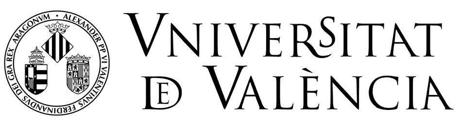
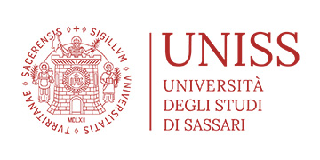
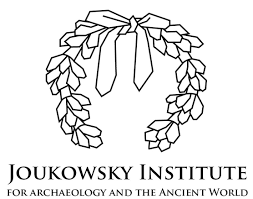
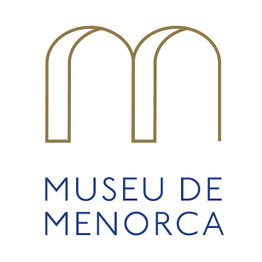
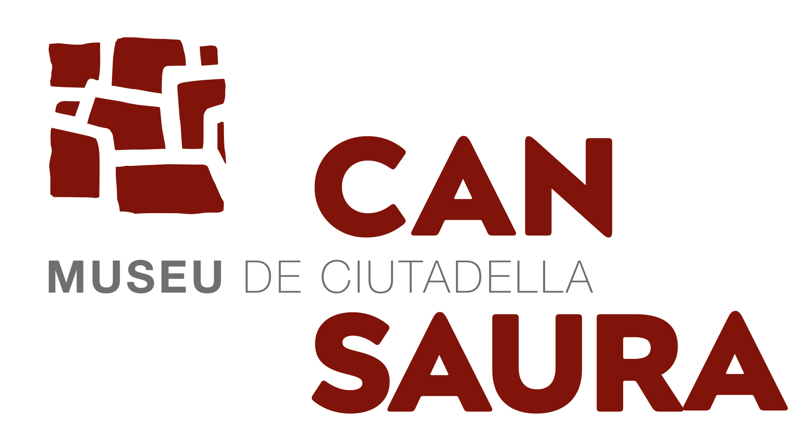
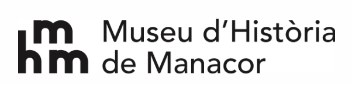

Partners & Funders
Institutions
The research institutions, funding bodies, and partner organisations that make the OVIS project possible.
Funding
Funder
European Union — Horizon Europe
OVIS is funded by the European Union under the Marie Skłodowska-Curie Actions postdoctoral fellowship programme (Horizon Europe, Grant Agreement No. 101209433). The Marie Skłodowska-Curie Actions support researchers at all stages of their careers, irrespective of age and nationality, and fund research, innovation, and training in all scientific domains.
Views and opinions expressed are those of the author(s) only and do not necessarily reflect those of the European Union or the European Research Executive Agency. Neither the EU nor the granting authority can be held responsible for them.
Host Institution
Where OVIS is Based
Cardiff University — School of History, Archaeology and Religion
Cardiff University hosts the OVIS fellowship. The School of History, Archaeology and Religion (SHARE) provides a leading research environment in archaeological science, with state-of-the-art isotope and biomolecular laboratories. Cardiff's isotope facility enables the strontium, oxygen, carbon, and nitrogen analyses central to the OVIS project.
Collaborations
Research Partners
The universities, museums, and research centres that collaborate with OVIS across the western Mediterranean and beyond.
-

-

-

-

-

-
